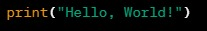

A habilidade humana para calcular de maneiras diversas foi um dos principais propulsores do desenvolvimento da matemática e da lógica. Nos primórdios da matemática e da álgebra, a contagem era realizada utilizando os dedos das mãos. A ferramenta mais antiga conhecida para cálculos foi o ábaco, inventado na Babilônia cerca de 2400 a.C. Inicialmente, seu uso envolvia desenhar linhas na areia com pedras. Versões modernas do ábaco ainda são empregadas como ferramentas de cálculo. Na Roma antiga, o ábaco era composto por bolinhas de mármore deslizando em sulcos de uma placa de bronze. Daí originou-se o termo "cálculo" do latim "calx", que significa mármore, referindo-se a uma bolinha do ábaco usada para aritmética. No século V a.C., na antiga Índia, o gramático Pānini formulou a gramática sânscrita usando 3959 regras conhecidas como Ashtadhyāyi, de forma extremamente sistemática e técnica. Pānini utilizou meta-regras, transformações e recursividade com tamanha sofisticação que sua gramática possuía um poder computacional teórico comparável ao da máquina de Turing. Entre 200 a.C. e 400 d.C., os indianos inventaram os logaritmos, e a partir do século XIII, tabelas logarítmicas foram elaboradas por matemáticos islâmicos. John Napier descobriu os logaritmos para uso computacional no século XVI, desencadeando um período de grande progresso na construção de ferramentas de cálculo. John Napier (1550-1617), escocês inventor dos logaritmos, também criou os ossos de Napier, que eram tábuas de multiplicação gravadas em bastões, eliminando a necessidade de memorizar a tabuada. A primeira máquina real foi construída por Wilhelm Schickard (1592-1635), capaz de realizar operações de soma, subtração, multiplicação e divisão. Essa máquina foi perdida durante a guerra dos trinta anos e recentemente foram encontrados alguns documentos relacionados a ela. Por muitos anos, atribuiu-se a Blaise Pascal (1623-1662) a construção da primeira calculadora, que realizava apenas adições e subtrações. Pascal, aos 18 anos, trabalhava com seu pai em um escritório de coleta de impostos em Rouen, onde desenvolveu a máquina para auxiliar em sua contabilidade. A calculadora utilizava engrenagens que a faziam funcionar de maneira semelhante a um odômetro. Pascal obteve uma patente do rei da França para comercializar sua máquina. A comercialização das calculadoras não foi bem-sucedida devido à sua operação pouco confiável, apesar de Pascal ter construído cerca de 50 versões. A máquina de Pascal foi concebida para ajudar seu pai a calcular impostos em Rouen, França. O trabalho de Pascal foi aprimorado pelo matemático alemão Gottfried Wilhelm Leibniz (1646-1726), que também inventou o cálculo e sonhava com um futuro onde todo o raciocínio pudesse ser substituído pelo girar de uma simples alavanca. Em 1671, o filósofo e matemático alemão de Leipzig, Gottfried Wilhelm Leibniz, introduziu a ideia de realizar multiplicações e divisões através de adições e subtrações sucessivas. Em 1694, uma máquina foi construída, mas sua operação era complexa e suscetível a erros. Em 1820, o francês Charles Xavier Thomas, conhecido como Thomas de Colmar, projetou e construiu uma máquina capaz de realizar as quatro operações básicas: a Arithmomet. Esta foi a primeira calculadora comercializada com sucesso. Ela utilizava o mesmo princípio da calculadora de Leibniz para multiplicação e auxílio do usuário para divisões. Todas essas máquinas, porém, não eram consideradas computadores, pois não eram programáveis. Ou seja, a entrada era apenas numérica, sem instruções sobre o que fazer com os números.
Os paradigmas de programação são abordagens ou estilos distintos para a escrita de código, cada um com princípios e diretrizes específicas. Vamos explorar alguns dos principais paradigmas, destacando suas características e fornecendo exemplos.
1. Paradigma Imperativo:
No paradigma imperativo, um programa é visto como uma sequência de comandos que modificam o estado do programa. As ações são explicitamente especificadas e executadas em ordem. Exemplo em C:
2. Paradigma Orientado a Objetos (OO):
No paradigma OO, o código é estruturado em torno de objetos que podem conter dados na forma de campos (atributos) e procedimentos (métodos). Exemplo em Java:
3. Paradigma Funcional:
O paradigma funcional trata a computação como uma avaliação de funções matemáticas e evita a mudança de estado e dados mutáveis. Exemplo em Haskell:
4. Paradigma Lógico:
Na programação lógica, a lógica formal é usada para expressar relações entre fatos e regras. Prolog é uma linguagem associada a esse paradigma. Exemplo Prolog:
5. Paradigma de Programação Orientado a Eventos:
Neste paradigma, o fluxo do programa é determinado por eventos como cliques do mouse, entrada do teclado, etc. Exemplo em JavaScript (para ambiente de navegador):
Esses são apenas alguns exemplos, e muitas linguagens de programação suportam múltiplos paradigmas. A escolha do paradigma depende da natureza do problema a ser resolvido e das preferências do programador. Compreender e aplicar diferentes paradigmas é essencial para se tornar um programador versátil e eficaz.
A linguagem de programação é uma ferramenta fundamental no desenvolvimento de software, permitindo que os programadores instruam um computador a executar tarefas específicas. Existem diversas linguagens de programação, cada uma com suas características, sintaxe e aplicações distintas. Vamos explorar algumas delas.
1. Codigo C:
C é uma linguagem de programação de baixo nível amplamente utilizada. Ela é conhecida por sua eficiência e desempenho, sendo frequentemente escolhida para sistemas embarcados e desenvolvimento de sistemas operacionais. Exemplo simples em C:
2. Python: Python é uma linguagem de alto nível, conhecida por sua legibilidade e simplicidade. Amplamente utilizada em desenvolvimento web, automação e análise de dados. Exemplo básico em Python:
3. Java:
Java é uma linguagem orientada a objetos, projetada para ser independente de plataforma. Ela é comumente usada no desenvolvimento de aplicativos empresariais e aplicações Android. Exemplo em Java:
4. JavaScript:
JavaScript é uma linguagem de script amplamente usada para desenvolvimento web. Ela permite a interação dinâmica com elementos da página. Exemplo básico em JavaScript:
5. SQL:
Structured Query Language (SQL) é uma linguagem especializada para gerenciar dados em sistemas de gerenciamento de bancos de dados relacionais (RDBMS). Exemplo simples de consulta SQL:
Esses são apenas alguns exemplos, e a escolha da linguagem depende do contexto do projeto e dos requisitos específicos. Cada linguagem tem suas vantagens e limitações, e os programadores escolhem a mais apropriada para a tarefa em questão.
Os paradigmas de programação são abordagens ou estilos fundamentais que orientam a construção de programas de computador. Cada paradigma oferece um conjunto de regras, métodos e filosofias para resolver problemas de forma específica. Eles ditam como os programas são estruturados, como o código é organizado e como as operações são realizadas. Para compreender melhor: - *Abstração de Problemas:* Os paradigmas fornecem maneiras diferentes de abstrair problemas do mundo real para o mundo computacional. Cada paradigma enfoca aspectos específicos do problema. - **Estruturas e Organização de Có
A classificação dos paradigmas de programação é essencial para compreender as diferentes abordagens que os desenvolvedores podem adotar ao criar software. Esses paradigmas representam filosofias distintas sobre como abordar e estruturar o código. Vamos explorar alguns dos principais paradigmas e fornecer exemplos ilustrativos.
No paradigma imperativo, o foco está nas instruções que alteram o estado do programa. As ações são explicitamente declaradas e executadas em sequência. C é um exemplo clássico de uma linguagem imperativa. Vejamos um exemplo simples:
O paradigma OO organiza o código em torno de objetos, que encapsulam dados e comportamentos. Java é uma linguagem amplamente utilizada que segue esse paradigma. Vejamos um exemplo de uma classe em Java:
O paradigma funcional enfatiza a avaliação de funções e evita o estado mutável. Haskell é uma linguagem que adota fortemente esse paradigma. Vejamos um exemplo de uma função em Haskell:
A programação lógica trata o programa como um conjunto de relações lógicas. Prolog é uma linguagem proeminente nesse paradigma. Um exemplo simples em Prolog
Este paradigma se concentra na resposta a eventos como cliques do mouse ou teclas pressionadas. JavaScript para o ambiente do navegador é um exemplo claro desse paradigma:
O paradigma procedural organiza o código em torno de procedimentos ou rotinas. Linguagens como C e Pascal são exemplares desse paradigma. Aqui está um exemplo em C:
Esses exemplos representam uma pequena amostra dos diversos paradigmas de programação existentes. Muitas linguagens modernas suportam múltiplos paradigmas, permitindo aos desenvolvedores escolher a abordagem mais adequada para cada projeto. A compreensão desses paradigmas é crucial para construir sistemas robustos e eficientes.